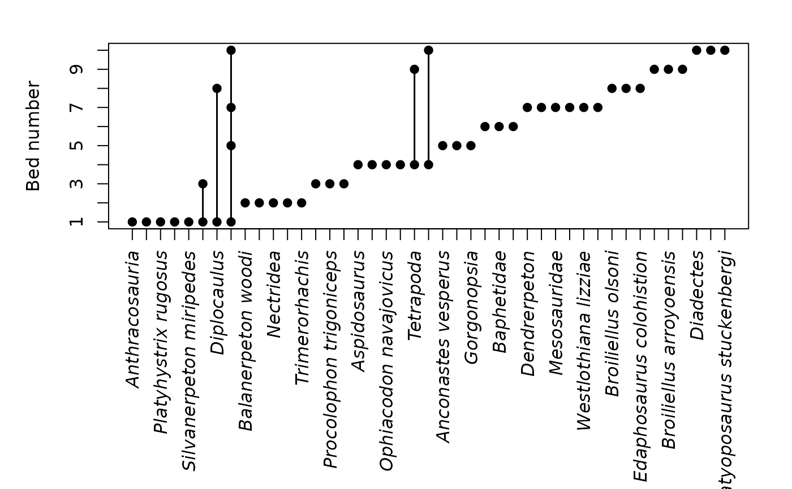
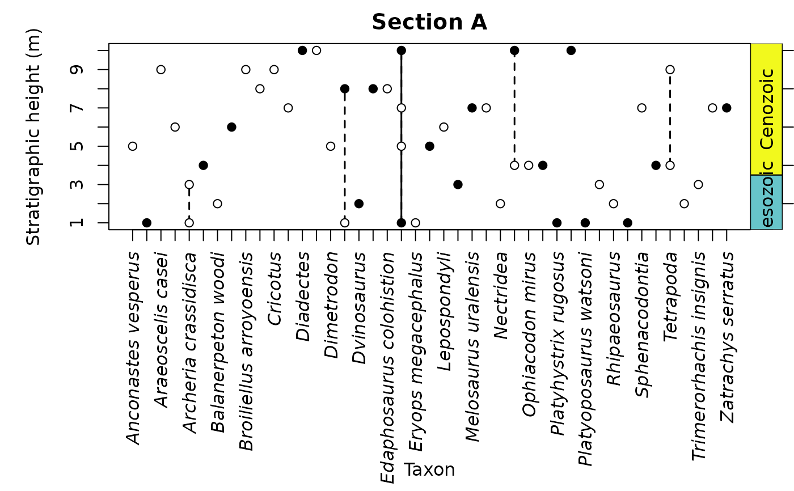
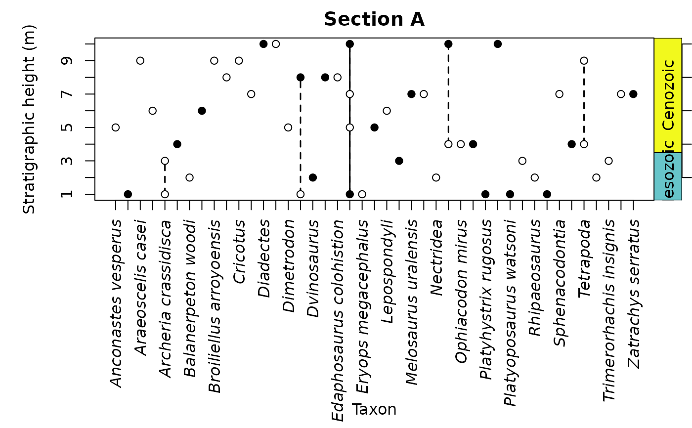

A function to plot the stratigraphic ranges of fossil taxa from occurrence data.
Usage
tax_range_strat(
occdf,
name = "genus",
level = "bed",
certainty = NULL,
by = "FAD",
plot_args = NULL,
x_args = NULL,
y_args = NULL
)Arguments
- occdf
dataframe. A dataframe of fossil occurrences containing at least two columns: names of taxa, and their stratigraphic position (seenameandlevelarguments).- name
character. The name of the column you wish to be treated as the input names, e.g. "genus" (default).- level
character. The name of the column you wish to be treated as the stratigraphic levels associated with each occurrence, e.g. "bed" (default) or "height". Stratigraphic levels must benumeric.- certainty
character. The name of the column you wish to be treated as the information on whether an identification is certain (1) or uncertain (0). By default (certainty = NULL), no column name is provided, and all occurrences are assumed to be certain. In the plot, certain occurrences will be plotted with a black circle and joined with solid lines, while uncertain occurrences will be plotted with a white circle and joined with dashed lines.- by
character. How should the output be sorted? Either: "FAD" (first appearance; default), "LAD" (last appearance), or "name" (alphabetically by taxon names).- plot_args
A list of optional arguments that are passed directly to
graphics::plot(). Subsets of these arguments are also passed tographics::segments()andgraphics::points()(see Details). Useful arguments includexlab(the x-axis label),ylab(the y-axis label, default is "Bed number"),main(the plot title),xlim(the x-axis limits), andylim(the y-axis limits). Theaxesandtypearguments are not supported and will be overridden.- x_args
A list of optional arguments that are passed directly to
axis()when generating the x-axis. Useful arguments includefont(e.g.,3is italic) andlas(label orientation). Thesideargument is not supported and will be overridden. If theatandlabelsarguments are not specified, the x-axis tick labels will be set to the taxon names.- y_args
A list of optional arguments that are passed directly to
axis()when generating the y-axis. Useful arguments includefont(e.g.,3is italic) andlas(label orientation). Thesideargument is not supported and will be overridden. If theatargument is not specified, it will be set to a vector of the unique values from thelevelcolumn.
Value
Invisibly returns a data.frame of the calculated taxonomic stratigraphic ranges.
The function is usually used for its side effect, which is to create a plot showing the stratigraphic ranges of taxa in a section, with levels at which the taxon was sampled indicated with a point.
Details
Note that the default spacing for the x-axis title may cause it to
overlap with the x-axis tick labels. To avoid this, you can call
graphics::title() after running tax_range_strat() and specify both
xlab and line to add the x-axis title farther from the axis (see
examples).
The styling of the points and line segments can be adjusted by supplying
named arguments to plot_args. col (segment and point color), lwd
(segment width), pch (point symbol), bg (background point color for
some values of pch), lty (segment line type), and cex (point size)
are supported. In the case of a column being supplied to the certainty
argument, these arguments may be vectors of length two, in which case the
first value of the vector will be used for the "certain" points and
segments, and the second value of the vector will be used for the
"uncertain" points and segments. If only a single value is supplied, it
will be used for both. The default values for these arguments are as
follows:
col=c("black", "black")lwd=c(1.5, 1.5)pch=c(19, 21)bg=c("black", "white")lty=c(1, 2)cex=c(1, 1)
Examples
# Load tetrapod dataset
data(tetrapods)
# Sample tetrapod occurrences
tetrapod_names <- tetrapods$accepted_name[1:50]
# Simulate bed numbers
beds_sampled <- sample.int(n = 10, size = 50, replace = TRUE)
# Simulate certainty values
certainty_sampled <- sample(x = 0:1, size = 50, replace = TRUE)
# Combine into data frame
occdf <- data.frame(taxon = tetrapod_names,
bed = beds_sampled,
certainty = certainty_sampled)
# Plot stratigraphic ranges
par(mar = c(12, 5, 2, 2))
tax_range_strat(occdf, name = "taxon")

tax_range_strat(occdf, name = "taxon", certainty = "certainty",
plot_args = list(ylab = "Stratigraphic height (m)"))
 # Plot stratigraphic ranges with more labelling
tax_range_strat(occdf, name = "taxon", certainty = "certainty", by = "name",
plot_args = list(main = "Section A",
ylab = "Stratigraphic height (m)"))
eras_custom <- data.frame(name = c("Mesozoic", "Cenozoic"),
max_age = c(0.5, 3.5),
min_age = c(3.5, 10.5),
color = c("#67C5CA", "#F2F91D"))
axis_geo(side = 4, intervals = eras_custom, tick_labels = FALSE)
title(xlab = "Taxon", line = 10.5)

# Plot stratigraphic ranges with more labelling
tax_range_strat(occdf, name = "taxon", certainty = "certainty", by = "name",
plot_args = list(main = "Section A",
ylab = "Stratigraphic height (m)"))
eras_custom <- data.frame(name = c("Mesozoic", "Cenozoic"),
max_age = c(0.5, 3.5),
min_age = c(3.5, 10.5),
color = c("#67C5CA", "#F2F91D"))
axis_geo(side = 4, intervals = eras_custom, tick_labels = FALSE)
title(xlab = "Taxon", line = 10.5)
